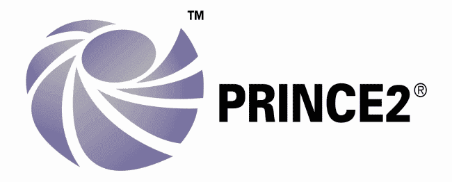
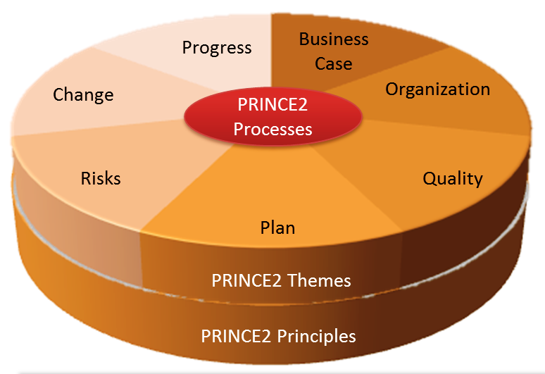
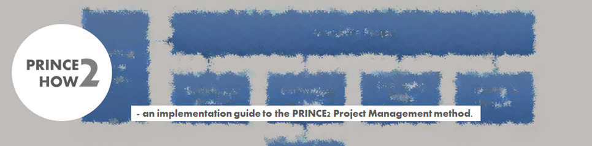
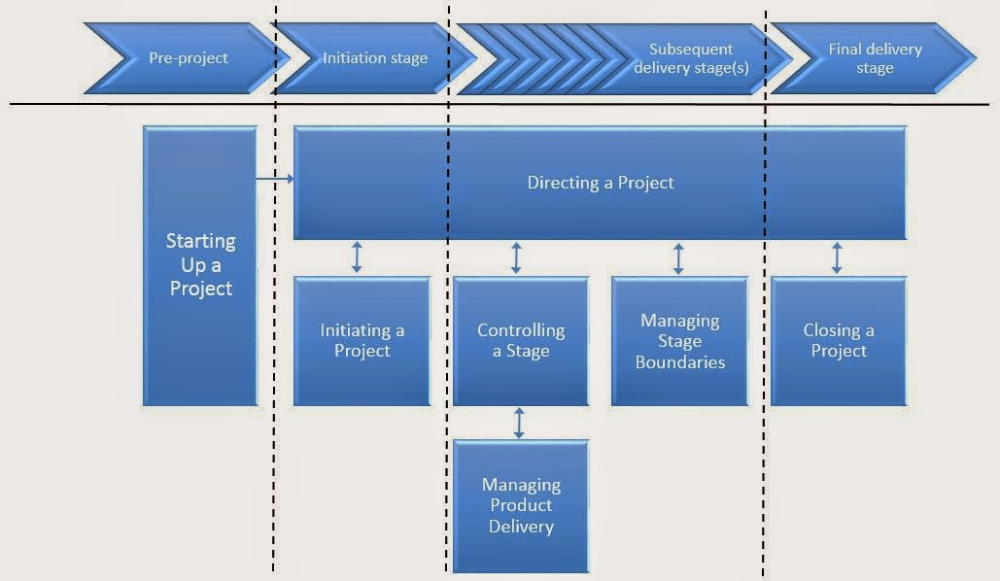
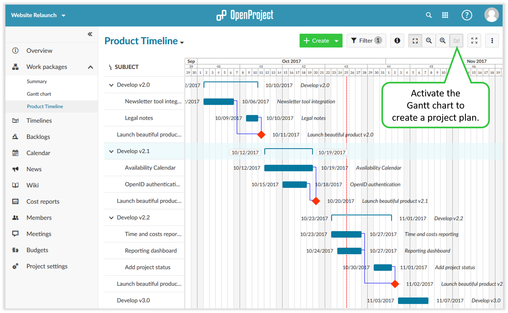

Project
Management
Projectmanagement is de praktijk van het initiëren, plannen, uitvoeren, controleren en afsluiten van het werk van een team om specifieke doelen te bereiken en aan specifieke succescriteria te voldoen op het opgegeven tijdstip.
→ zie: Wikipedia Project Management
Uitdaging van projectmanagement is om alle projectdoelen te bereiken binnen de gegeven randvoorwaarden. Deze informatie wordt meestal beschreven in projectdocumentatie, gemaakt aan het begin van het ontwikkelingsproces.
Primair zijn reikwijdte, tijd, kwaliteit en budget. De secundaire, en meer ambitieuze, uitdaging is om allocatie van resources te optimaliseren om vooraf gedefinieerde doelstellingen te bereiken.
Prince2

Prince2 (PRojects IN Controlled Environments) is een gestructureerde methode voor projectmanagement en certificeringsprogramma voor professionals. Prince2 benadrukt het verdelen van projecten in beheersbare en controleerbare fasen.
→ zie: Wikipedia Prince2
Kenmerken
Prince2 is toepasbaar op alle projecten en kent een grote flexibiliteit qua inzet. Aspecten van de methode die niet van toepassing zijn op (of niet nuttig voor) een bepaald project, kunnen weggelaten worden. De methode bestaat uit 7 principes, 7 thema's en 7 processen. Enkel de toepassing van de principes bepaalt of iets een PRINCE2-project is, niet de strikte toepassing van de thema's of processen.
→ zie: YouTube Videotorial Prince2
Prince2 templates 
Onderdeel van Prince2 is project documentatie met voor elk proces een of meerdere manieren documenten ter realisatie. Hieronder een reeks templates als voorbeeld om start te vergemakkelen. Verder biedt website prince2how2.com allerlei praktische informatie en downloadable docs.
→ zie: Website Prince2how2
- Project Mandate 
-
Prince2 definieert op zich geen vaste indeling of structuur van een projectmandaat. Maar als voorbeeld voor opstarten van project gebruik onderstaand document.
→ zie: Project Mandate download & get started
- Project Brief
-
Om een goede start van een Prince2 project te borgen, besteed veel zorg en aandacht aan de Project Brief en maak het van hoge kwaliteit.
→ zie: Project Brief download & get started
→ zie: Project Brief Verkorte versie download & get started
→ zie: Project Brief Presentatie.pptx download & get started
- Project Business Case
-
Een van de Prince2 principes is dat een project op elk moment een voortdurende zakelijke rechtvaardiging heeft. Deze rechtvaardiging kan worden gedocumenteerd met behulp van document Business Case.
→ zie: Project Business Case download & get started
- Project Logs & Register
-
Een pragmatische aanpak is om op één plek alle in omloop zijnde documenten, registers en logs bij te houden en bijgaande template is te gebruiken.
→ zie: Project Logs en Register download & get started
- Project Initiation Document (PID)
-
Binnen Prince2 beschrijft het Project Initiatie Document (PID) de algehele definitie van het project. In PID staat de basis voor alle werkzaamheden en beoordeling van het algehele succes.
→ zie: Project PID download & get started
- Project Plan & Planning
-
Het initiëren van een project kost tijd en geld en moet worden gepland en goedgekeurd. En dat "tijd en geld" wordt beschreven in het Initiation Stage Plan (ISP) met "overall" scope van het het project. Waar ISP een overall beschrijving geeft is er voor elke Stage een eigen plan in de vorm van document "per Stage".
→ zie: Project Initiatie Stage Plan met Planning download & get started
→ zie: Project Stage met Planning download & get started
- Project Benefits Review Plan
-
Een Benefits Review Plan wordt gebruikt om te definiëren hoe, op welke wijze en wanneer een meting van de verwezenlijking van de voordelen van het project kan worden uitgevoerd.
→ zie: Project Benefits Review Plan download & get started
- Project Product Description
-
De projectmanager zorgt voor afstemming tussen team leden over wat er moet gebeuren en hoe. Product Description beschrijft gedetailleerde aard, het doel, de functie en het uiterlijk van het product, wie het product zal gebruiken, de informatiebronnen, het vereiste kwaliteitsniveau en activiteiten om het product te produceren, te beoordelen en goed te keuren, alsmede benodigde mensen of vaardigheden.
→ zie: Project Product Description download & get started
→ zie: Project Product Description download & get started (verkorte versie)
- Project Work Package
-
Een Workpackage is een set informatie over een of meer vereiste producten die door de projectmanager zijn verzameld om de verantwoordelijkheid voor het werk of de levering formeel over te dragen aan een teamleider of teamlid.
→ zie: Project Work Package download & get started
→ zie: Project Work Package download & get started (verkorte versie)
- Rapportages
-
Rapportages kunnen op verschillende verschijningsvormen worden gerealiseerd. Onderstaand twee templates van Highlight verslag en Issue melding. Een Issue melding wordt in eerste instantie gemaakt bij het vastleggen van het probleem en wordt zowel bijgewerkt nadat het probleem is onderzocht als wanneer voorstellen zijn geïdentificeerd voor probleemoplossing.
→ zie: Project Highlight report.pptx download & get started
→ zie: Project Issue report download & get started (verkorte versie)
Project & Portfolio management tool

Een PPM-tool kan plannen, organiseren en beheren van resources: bemensing, goederen en uitbesteed werk. Afhankelijk van de verfijning van de software, bevat het schattingen, planning, kostenbeheersing, budgetbeheer, resource management met allocatie, communicatie, besluitvorming, kwaliteitsmanagement, risico management, urenregistratie, rapportage en documentatie. Sommige PPM-tools zijn specifiek voor een branche gemaakt bijv. Bouwnijverheid.
→ zie: Wikipedia Projectmanagement tool
Er bestaan vele tientallen PPM-tools om uit te kiezen, met ook weer veel lijstjes van welke dan de beste zijn, soms zelfs met volgorde en top winnaar. Bij keuze van tool is het dan ook goed om zelf te bedenken welke functionaliteit gewenst of noodzakelijk is. Tools op "best lijstjes" zijn: MyCollab, OpenProject,Phabricator, Gitlab, Odoo, Taiga, Tuleap, Asana, Trello, Redmine, Basecamp, TeamGantt, Paymo, ClickUp, Airtable, Wrike, Teamwork Projects, Redbooth, Avaza, Zenkit etc.
→ zie: Wikipedia PPM-tools overzicht & vergelijking
Bij DevOps profiel Full Stack Web Developer zijn tools gepresenteerd voor ondersteunen op detail niveau van bug & issue tracking. Bijv. tool Jira en integratie met Jenkins, met planning, pipeline & workflow. En GitHub is een andere tool die ook bij software ontwikkeling prima ingezet kan worden.
Bij gebruikmaken van een PPM-tool in combinatie met DevOps GitHub/Jira/Jenkins achtige pipeline is het niet handig om dan in de PPM-tool de functies uit die pipeline dubbel te doen. Doch binnen PPM-tool te handelen op een hoger abstractie niveau, dat wil zeggen: een vereenvoudigde versie van aandachtspunten, gegroepeerd per soort Test, waarvan details zijn weggelaten.
→ zie: DevOps QA Quality Assurance
Indien géén DevOps pipeline dan kan PPM-tool prima dienen voor Bug & Issue Tracking.
OpenProject PPM-tool
OpenProject is een opensource webbased PPM-tool voor locatie onafhankelijke team samenwerking, en is beschikbaar als een free Community Edition en een Enterprise Edition. Ontwikkeling wordt hoofdzakelijk gedaan door bedrijf OpenProject GmbH. Naast tal van kleinere OpenProject installaties, zijn er ook enkele zeer grote installaties in wereldwijde organisaties met meer dan 2500 projecten in hun portfolio.
→ zie: Wikipedia PPM-tool OpenProject
→ zie: Website OpenProject download & get started
- Kenmerken
-
Project planning and scheduling, Product roadmap and release planning, Task management, team samenwerking, Kanban, Agile & Scrum, Bug Tracking, Time tracking, cost reporting, budgeting en Wiki.
Migratie

Individuele gebruiker
Migratie van Windows naar Linux

De overstap of "migratie" van Windows naar Linux is voor een tech savvy gebruiker door hem/haar zelf prima te doen. Heersende trend is dat Linux Mint Cinnemon edition is aan te bevelen! Want deze distro heeft default een zeer complete set van FOSS free OpenSource software en geeft de beste ervaring omdat die 'desktop' qua look and feel veel op Windows lijkt, inclusief kantoor tools - zie onder link naar Content Creator voor meer. Na even wennen voelt gebruiker zich snel thuis.
→ zie: DevOps Multimedia Content Creator
→ zie: Linux Mint Installatie gids
Op Home Page van deze website staat geadviseerd het gebruik van mailclient Thunderbird, mét vermelding van email tooling "readpst". Deze tool verzorgt de conversie van MS Outlook ".pst" bestanden naar Thunderbird "mbox" formaat, mét elke afzonderlijke mail daarin geintegreerd alle attachments in "pdf" formaat (sommige converters bewaren attachments separaat; readpst doet dat dus veel beter want geconverteerde mail is in 1x view compleet).
Verder zijn 'alle' MS Office formaten zoals ".docx" en ".xls" compatibel met LibreOffice kantoor automatisering.
Doen na installatie van Linux op computer:
→ sluit via USB port het apparaat aan waarop gebruiker Windows data staat
→ dan start automatisch de Linux file explorer
→ sleep "per folder" via drag and drop data van USB apparaat naar computer
→ klaar
Organisatie breed
Migratie van Windows naar Linux

{under contruction}
In de maak en binnenkort beschikbaar, handleiding ter verrichten van voorstudie en planvorming tbv organisatie om te komen tot migratie van Windows naar Linux.